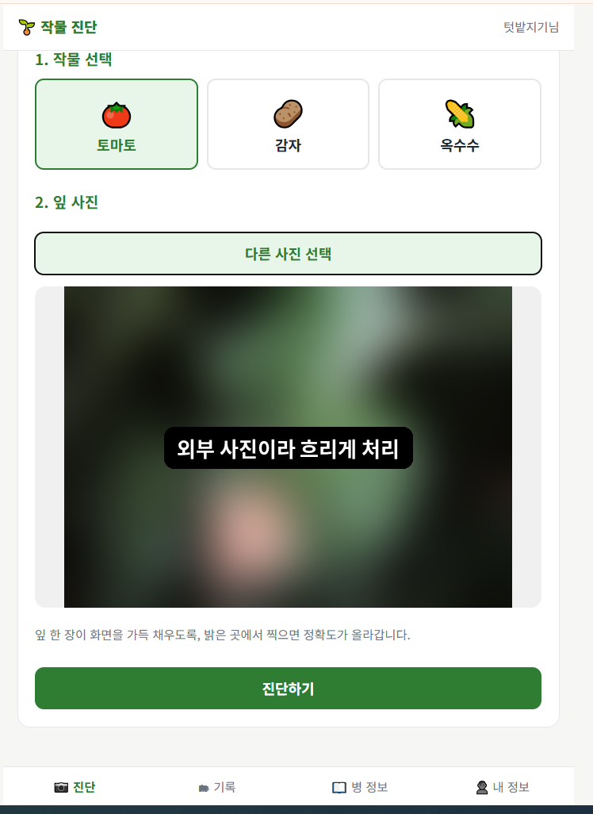
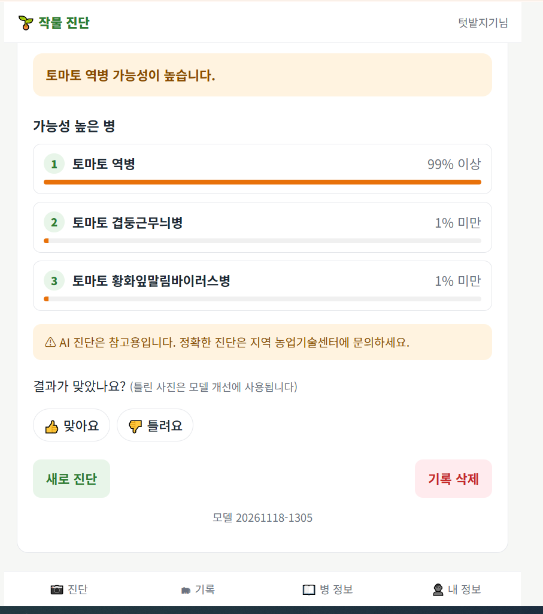
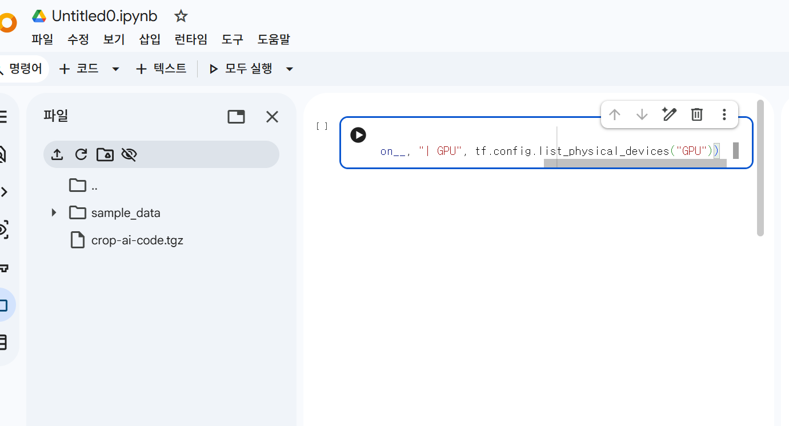
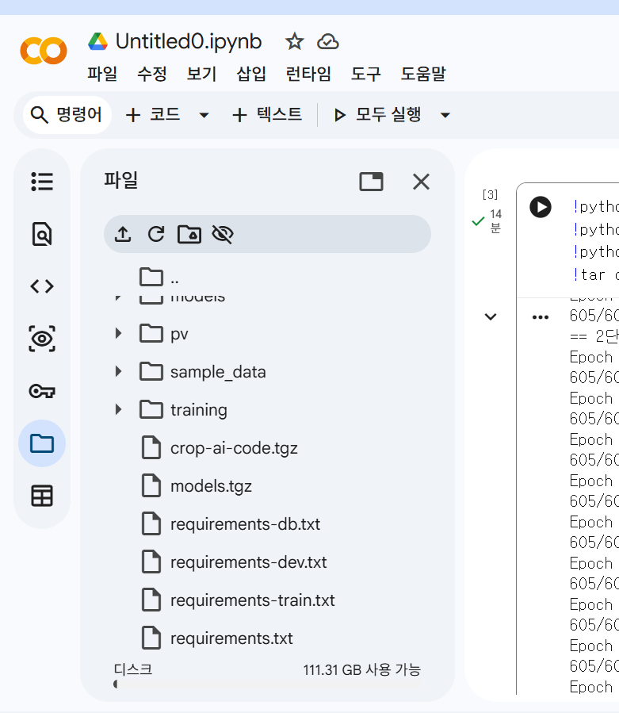
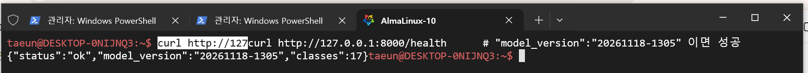
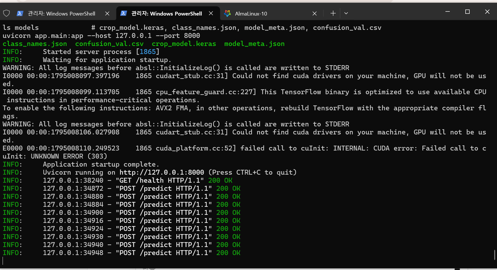
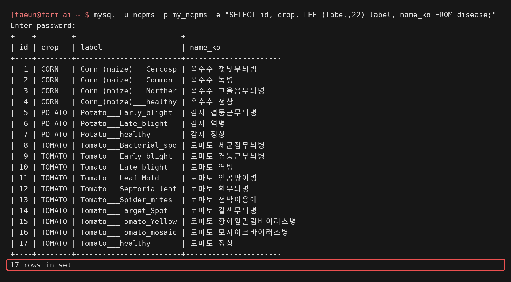
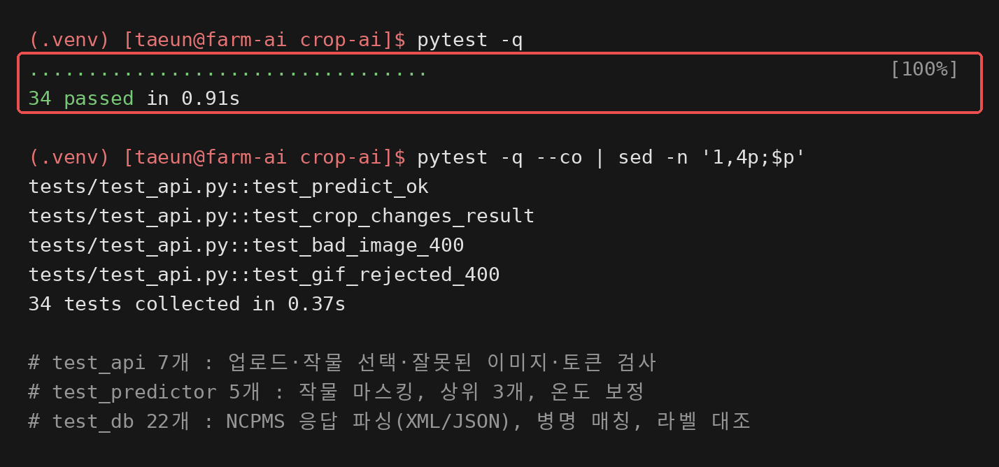

개인 프로젝트 · 스마트팜 하위 프로젝트
작물 질병 진단 앱 (crop-ai)
개인 프로젝트앱 완성모델 1차 학습실제 사진 정확도 개선 필요
토마토·감자·옥수수 잎 사진을 올리면 가능성 높은 병 3개와 확률을 알려주는 앱입니다. 앱 화면(React), 백엔드(Spring Boot), AI 추론 서버(FastAPI), 병 정보 DB(MySQL)를 모두 직접 만들었고, 회원가입부터 진단·기록·피드백까지 처음부터 끝까지 동작합니다.
모델은 공개 데이터셋(PlantVillage)을 Google Colab GPU에서 학습해 검증 정확도 93.8%(상위 3개 안에 정답 99.5%)가 나왔습니다. 하지만 이 점수는 실험실 배경 사진 기준이고, 인터넷의 실제 밭 사진으로 시험해 보니 학습하지 않은 병 사진에도 "모르겠다"고 하지 못하고 아는 병 이름을 높은 확률로 대는 한계가 확인됐습니다. 아래 4장에 그대로 적었습니다.
1. 구성

| 폴더 | 기술 | 역할 |
|---|---|---|
frontend/ | React 19 · Vite · TypeScript | 휴대폰 화면. 진단 · 기록 · 병 정보 · 내 정보 4개 탭 (:5173) |
backend/ | Spring Boot 4 · Spring Security · JPA | 회원·로그인(JWT), 사진 저장, AI 서버 호출, 진단 판정, 기록·피드백 (:8080) |
ai-server/ | FastAPI · TensorFlow(Keras) | 추론 서버(127.0.0.1:8000), 학습·평가 코드, NCPMS 병 정보 수집, DB 스키마·백업 |
docs/ | Markdown | API 명세 v1.1, 처음부터 다시 세우는 방법(setup.md) |
사진은 사용자 → Spring → AI 서버 순서로만 흐릅니다. AI 서버는 외부에 포트를 열지 않고, Spring만 내부 토큰을 붙여 호출합니다.
2. 앱 화면 (React)


| 화면 | 내용 |
|---|---|
| 로그인 · 회원가입 | 비밀번호 규칙(영문+숫자, 아이디 포함 금지)을 서버와 똑같이 화면에서도 먼저 검사 |
| 진단 | 휴대폰에서는 바로 카메라가 열림(capture), 10MB 넘는 사진은 올리기 전에 막음 |
| 결과 | 후보 3개와 확률, 확신 정도에 따른 안내 문구, "맞아요 / 틀려요" 피드백, 병 정보 페이지로 연결 |
| 기록 | 지난 진단 목록과 썸네일. 삭제 시 사진 파일도 함께 삭제 |
| 병 정보 | NCPMS 병 설명·방제법, 출처 표시 |
| 내 정보 | 닉네임·지역 변경, 비밀번호 변경, 회원 탈퇴 |
확률을 "100%"로 보여 주면 사용자가 정답으로 믿기 쉬워서, 99.5% 이상은 "99% 이상", 0.5% 미만은 "1% 미만"으로 표시합니다. 로그인 토큰이 만료되거나 서버가 401을 돌려주면 자동으로 로그아웃하고, 백엔드가 아직 안 떠 있을 때(502·503)는 "서버 준비 중"으로 따로 안내합니다.
3. 모델 학습 — Google Colab 1차 완료
개발에 쓰는 태블릿은 GPU가 없어서 CPU로 학습하면 몇 시간이 걸립니다. 그래서 학습만 Google Colab의 무료 T4 GPU에서 하고, 결과 파일(models.tgz)만 받아 로컬 AI 서버에 넣는 방식으로 나눴습니다. 추론은 CPU로도 충분히 빨라서 서버 쪽에는 GPU가 필요 없습니다.
학습 과정
| 순서 | 한 일 | 이유 |
|---|---|---|
| 1 | Colab 새 노트북 → 런타임 유형 변경 → T4 GPU | 기본은 CPU 런타임이라 바꾸지 않으면 학습이 수십 배 느림 |
| 2 | 로컬에서 학습 코드만 묶어(crop-ai-code.tgz: app, training, db, requirements) 파일 패널에 업로드 | 저장소 전체가 아니라 학습에 필요한 코드만 올림. 비밀값·DB 정보는 들어가지 않음 |
| 3 | TensorFlow·Keras 버전과 GPU 인식 확인 → TF 2.21.0 / Keras 3.13.2 기록 | 모델 파일은 학습한 버전과 같은 버전에서만 안전하게 열리므로, 로컬 서버에 같은 버전을 설치 |
| 4 | PlantVillage 저장소를 git sparse-checkout으로 토마토·감자·옥수수 컬러 사진만 받음 | 전체 38종 대신 필요한 17종만 받아 다운로드량을 줄임 |
| 5 | 학습용/검증용 나누기 → 학습 → 평가·온도 보정 | 아래 명령 그대로. 15 epoch 학습에 약 14분 |
| 6 | models.tgz로 묶어 내려받기 → 로컬 ai-server/에 풀고 서버 시작 → /health로 모델 버전 확인 | Colab 런타임은 끊기면 파일이 사라지므로 끝나자마자 내려받음 |

crop-ai-code.tgz) 업로드
!tar xzf crop-ai-code.tgz
# PlantVillage 중 토마토·감자·옥수수 컬러 사진만 받기
!git clone -q --depth 1 --filter=blob:none --sparse https://github.com/spMohanty/PlantVillage-Dataset.git pv
!cd pv && git sparse-checkout set --no-cone "raw/color/Tomato___*" "raw/color/Potato___*" "raw/color/Corn_(maize)___*"
!python -m training.split_plantvillage --src pv/raw/color --out data # 17종, 학습 19,337 / 검증 4,827장
!python -m training.train --train-dir data/train --val-dir data/valid
!python -m training.evaluate --data-dir data/valid --fit-temperature # 정확도·혼동행렬·온도 보정
!tar czf models.tgz models

models.tgz 생성학습 방법
| 단계 | 방법 | 검증 정확도 |
|---|---|---|
| 1단계 (5 epoch) | ImageNet으로 학습된 MobileNetV2는 고정하고 마지막 분류층만 학습 | 83.8% → 88.2% |
| 2단계 (10 epoch) | 상위 30개 층을 풀어(BatchNorm은 고정) 학습률 1e-5로 미세 조정. 증강(뒤집기·회전·밝기)은 모델 안에 포함 | 90.1% → 93.8% |
| 확률 보정 | 온도 보정(temperature scaling) T=1.15. "확률 90%"가 실제로 90% 맞도록 조정해 model_meta.json에 저장 | NLL 0.171 → 0.169 |
결과
병별로 보면 대부분 90% 이상이지만, 서로 비슷하게 생긴 토마토 잎 반점 병들끼리 헷갈렸습니다.
| 약한 병 | 수치 | 의미 |
|---|---|---|
| 토마토 겹둥근무늬병 (Early blight) | 재현율 0.73 | 실제 이 병 사진의 27%를 다른 병으로 답함 |
| 토마토 Target spot | 정밀도 0.77 | 이 병이라고 답한 것 중 23%는 다른 병 |
| 토마토 Septoria 잎마름병 | 재현율 0.82 | 비슷한 반점 병들과 혼동 |
학습된 모델 파일(crop_model.keras 등)은 저장소에 그대로 올리지 않고 gpg AES256으로 암호화한 models.tgz.gpg와 SHA-256 체크섬만 올렸습니다.
4. 실제 사진 시험과 한계 개선 필요
검증 점수는 PlantVillage 안에서 나눈 사진(단색 배경, 잎 한 장)이라 실제 밭 사진의 성적이 아닙니다. 그래서 인터넷에서 실제 밭 사진 9장을 받아 따로 시험했습니다. 9장 중 학습한 17종에 들어 있는 병은 감자 역병 1장뿐이고, 나머지는 일부러 학습하지 않은 병으로 골랐습니다.
| 실제 병 | 학습한 병? | 모델 1순위 (확률) | 판정 |
|---|---|---|---|
| 감자 역병 | 예 | 역병 97% | 정답 |
| 옥수수 잎마름 증상 | 비슷한 병 있음 | 회색점무늬병 50% / 그을음무늬병 49% | 두 후보가 반반 — 0.8 미만이라 한 병으로 확정하지 않고 후보로 안내 |
| 옥수수 깜부기병 | 아니오 | 정상 89% | 학습 범위 밖 |
| 옥수수 줄기썩음병 | 아니오 | 정상 83% | 학습 범위 밖 |
| 감자 더뎅이병 | 아니오 | 역병 79% | 학습 범위 밖 |
| 감자 Y바이러스 | 아니오 | 역병 99.8% | 학습 범위 밖 |
| 토마토 풋마름병 | 아니오 | 겹둥근무늬병 96% | 학습 범위 밖 |
| 토마토 검은잎곰팡이병 | 아니오 | 겹둥근무늬병 98% | 학습 범위 밖 |
| 토마토 갈색주름과일바이러스(ToBRFV) | 아니오 | 겹둥근무늬병 98% | 학습 범위 밖 |
학습하지 않은 7종은 애초에 맞힐 수 없는 사진이라 정답·오답을 따질 대상이 아닙니다. 이 시험으로 확인하려던 것은 모르는 사진을 받았을 때 모델이 어떻게 반응하는가였고, 결과는 7장 모두 "모르겠다" 대신 79~99.8% 확률로 아는 병 이름을 댔습니다. 사용자는 확률만 보고 그 병이라고 믿을 수 있기 때문에 이 부분이 실제 문제입니다.
앱 화면으로 시험한 토마토 잿빛곰팡이병 사진도 학습하지 않은 병이라, 2장의 결과 화면처럼 "역병 99% 이상"으로 나왔습니다. (시험 사진은 외부 이미지라 페이지에 싣지 않았습니다.)
원인: 모델은 "모르는 병"이라는 답이 없어서 항상 17종 중 하나를 고릅니다. 게다가 서버는 사용자가 고른 작물의 병만 남기고 확률을 다시 계산(작물 마스킹)하기 때문에, 토마토를 고르면 토마토 병 몇 개끼리 100%를 나눠 갖게 되어 학습하지 않은 병 사진도 96~99%처럼 높은 확률로 아는 병 이름이 나옵니다. 확률이 높다고 맞는 것이 아니라는 점이 이번 시험에서 가장 크게 배운 부분입니다.
| 지금 해 둔 안전장치 | 나중에 할 개선 |
|---|---|
|
· 결과마다 "AI 진단은 참고용, 지역 농업기술센터에 문의" 안내 · "100%" 대신 "99% 이상" 표시 · 1순위가 0.5 미만이면 "불확실"로 판정 · "틀려요" 피드백과 사진을 저장해 재학습 자료로 사용 |
· 작물 마스킹 전 17종 전체 확률로 "학습하지 않은 병일 수 있음" 판단 · "기타 / 모르는 병" 클래스 추가 · 실제 밭 사진(배경·조명이 섞인 사진)으로 추가 학습 · 잿빛곰팡이병 등 자주 나는 병 클래스 추가 |
이 프로젝트에서는 모델 고도화보다 앱 전체를 끝까지 연결하는 것을 우선해, 개선은 다음 단계로 남겨 두었습니다.
5. 백엔드 (Spring Boot)
| API | 내용 |
|---|---|
POST /api/v1/auth/signup, /login | 회원가입, 로그인 → JWT 발급(60분) |
GET·PATCH·DELETE /api/v1/members/me, PUT /me/password | 내 정보 조회·수정, 탈퇴(진단 기록과 사진 파일까지 삭제), 비밀번호 변경 |
POST /api/v1/diagnoses | 사진 + 작물 → AI 서버 호출 → 판정 후 저장 |
GET /api/v1/diagnoses[/{id}], /image, /thumbnail | 내 기록 목록(작물 필터·페이지), 상세, 원본·썸네일(300px) |
PUT /{id}/feedback, DELETE /{id} | 맞아요·틀려요 피드백, 기록 삭제 |
GET /api/v1/diseases[?crop], /{id} | 병 목록·상세 (로그인 없이 조회 가능) |
판정 규칙은 백엔드가 담당합니다. 1순위가 0.8 이상이면 그 병 하나, 0.5 미만이면 "불확실", 정상 잎이 0.8 이상이면 "건강"으로 판정합니다.
보안·운영에서 신경 쓴 부분
| 항목 | 구현 |
|---|---|
| 비밀번호 | BCrypt 저장. 5회 실패 시 15분 잠금(423). 없는 아이디도 가짜 해시를 비교해 응답 시간으로 아이디 존재 여부를 알 수 없게 함 |
| 인증 | 세션 없는 JWT(HS256, 발급자 검사, 60분). 비밀키는 환경변수, 32바이트 미만이면 서버가 시작하지 않음 |
| 권한 | 다른 회원의 진단 기록·사진을 요청하면 403. 오류 응답은 모두 같은 JSON 형식(코드 + 메시지) |
| 업로드 | 10MB 제한(413), 확장자가 아니라 파일 앞부분(매직 바이트)으로 JPEG·PNG 확인, 저장 경로는 UUID + 경로 탈출 검사 |
| AI 서버 장애 | AI 서버가 꺼져 있으면 503으로 응답하고, 이미 저장한 사진 파일은 지움. AI 호출은 DB 트랜잭션 밖에서 해 DB 연결을 오래 잡지 않음 |
| DB 계정 | 앱 전용 계정 crop_backend에는 SELECT·INSERT·UPDATE·DELETE만 부여. 테이블 변경은 관리자 계정으로만 |
| CORS | 허용 주소를 환경변수로 지정(기본: 개발 화면 주소 하나) |
회원가입·로그인, 진단, 기록, 피드백, 삭제, 다른 회원 기록 접근(403), 중복 아이디(409), 잘못된 입력(400), 로그인 5회 실패 후 잠금(401×5 → 423), AI 서버 중지 시 503까지 curl과 앱 화면으로 하나씩 확인했습니다.
6. 추론 서버 (FastAPI)
| 처리 | 내용 |
|---|---|
| 이미지 검사 | 깨진 파일 확인, jpg·png만 허용, 휴대폰 사진 회전(EXIF) 보정, 224×224로 맞춤. 최대 10MB(초과 시 413) |
| 작물 마스킹 | 사용자가 고른 작물의 병만 남기고 확률을 다시 계산 → 토마토 사진이 감자 병으로 나오는 일 방지 (부작용은 4장) |
| 응답 | 항상 상위 3개 + 확률 + 모델 버전. 판정은 백엔드가 담당 |
| 내부 인증 | X-Internal-Token을 상수 시간 비교(hmac.compare_digest), 불일치 시 401 |
| 노출 범위 | 127.0.0.1에서만 대기, 외부 포트 열지 않음 |

/health 확인 — 모델 버전 20261118-1305, 17종

7. NCPMS Open API 신청
병 설명과 방제법은 농촌진흥청 국가농작물병해충관리시스템(NCPMS)의 Open API에서 받습니다. 회원가입 후 마이페이지 → openAPI 신청에서 신청하면 인증키가 바로 생성됩니다.

| 항목 | 내용 |
|---|---|
| 사용한 서비스 | SVC01 병 검색(작물명·병명 → sickKey), SVC05 병 상세(증상·발생 환경·방제 방법) |
| 사용도메인 | 등록하지 않은 곳에서 호출하면 ERR_105(미등록 도메인). 로컬에서 통과해도 운영 서버에서 다시 확인 필요 |
| 인증키 보관 | WSL의 ~/.secrets/에만 두고 환경변수로 주입. 저장소에는 .env.example만 올림 |
| 이용 조건 | 공공누리 제2유형 — 출처 표시 필수, 상업적 이용 금지. 앱 화면에 "농촌진흥청 NCPMS" 출처 표시 |
응답이 XML일 때와 JSON일 때가 섞여 있어, 클라이언트는 첫 글자로 형식을 판단해 둘 다 읽게 만들었습니다. 본문에 섞인 <br>·이스케이프된 태그(<b>)·CDATA도 정리해서 DB에는 줄바꿈만 남긴 순수 텍스트로 넣습니다.
8. 병 정보 DB 채우기
모델이 쓰는 라벨은 PlantVillage 데이터셋 폴더명(영문)이고, NCPMS 병명은 한글이라 1:1로 맞지 않습니다. 작물명 + 한글 병명으로 먼저 찾고, 없으면 영문 병명으로 찾은 뒤, 사람이 확인한 결과를 sickkey_map.json에 고정했습니다.

--apply를 붙여야 DB에 반영 (API 키는 환경변수)| 출처 | 건수 | 내용 |
|---|---|---|
| NCPMS 원문 | 12종 | 병 설명·방제법 |
| 고정 문구 | 4종 | 정상 잎 3종(병 API 대상 아님), 점박이응애(해충이라 병 API 대상 아님) |
| 사람이 쓴 초안 | 4건 | NCPMS에 없거나 비어 있는 칸. 옥수수 그을음무늬병 등 — 검토 전이라 서비스 사용 금지 표시 |

my_ncpms.disease 17행. 테이블은 member, disease, diagnosis, diagnosis_candidate 4개# 백업 (공유용: 모든 테이블 구조 + disease 데이터만, 회원·진단 기록 제외)
DB_USER=관리자계정 DB_NAME=my_ncpms bash scripts/backup_db.sh
# 복원 (utf8mb4 지정으로 한글 깨짐 방지)
DB_USER=관리자계정 DB_NAME=my_ncpms bash scripts/restore_db.sh db/backup/my_ncpms.sql9. 라벨 대조 — 한 글자만 달라도 연결이 끊김
진단 결과의 label로 DB의 병 정보를 찾기 때문에, 모델 클래스명 · DB disease.label · 학습 폴더명 세 곳이 글자 하나까지 같아야 합니다. 밑줄 개수나 공백 하나만 달라도 결과가 병 정보와 연결되지 않아서, 대조 도구를 만들어 학습·연동 전에 먼저 돌립니다.

10. 테스트

| 파일 | 검사 내용 |
|---|---|
test_api.py (7) | 정상 예측, 작물에 따라 결과 변경, 깨진 이미지·GIF 400, 잘못된 작물 400, health, 토큰 검사 |
test_predictor.py (5) | 라벨 17개, 선택 작물만 반환, 옥수수 4개 중 상위 3개, 온도 보정 효과 |
test_db.py (22) | XML/JSON 파싱, 오류 코드 처리, 한글·영문 병명 매칭(다른 작물 병 제외 등), 라벨 대조, 수동 문구 적용 |
백엔드와 화면은 아직 자동 테스트 없이 수동으로 확인했습니다(5장). 백엔드 자동 테스트는 남은 일에 넣었습니다.
11. 저장소 관리 — 민감 정보 빼고 올리기
세 부분을 하나의 비공개 GitHub 저장소(crop-ai)에 올렸습니다. 비공개라도 실수에 대비해, 다른 사람이 받았을 때 빠진 것을 어떻게 다시 만드는지를 docs/setup.md에 적고 민감한 것은 아예 올리지 않았습니다.
| 올리지 않은 것 | 다시 만드는 방법 |
|---|---|
| 내부 토큰 · JWT 비밀키 · NCPMS 인증키 | 새로 생성하는 명령과 넣을 환경변수 이름을 .env.example, setup.md에 정리 |
| 회원 · 진단 기록 | 공유용 백업은 테이블 구조 + 병 정보만. 복원 스크립트로 빈 DB 생성 |
| 모델 파일 | 암호화본(models.tgz.gpg) 복호화, 또는 Colab에서 같은 명령으로 재학습 |
| 학습 데이터 · 시험 사진 | PlantVillage 일부만 받는 방법(sparse checkout)과 분리 스크립트 |
올리기 전에는 실제 비밀값을 git grep --cached로 직접 대조해(값은 화면에 출력하지 않고 걸린 파일·변수 이름만 확인) 코드에 키가 들어가지 않았음을 확인했습니다. 푸시는 저장소 하나·Contents 권한만 가진 fine-grained 토큰으로 했습니다.
12. 남은 일
| 순서 | 할 일 |
|---|---|
| 1 | 학습하지 않은 병 걸러내기(마스킹 전 확률 활용, "기타" 클래스) — 4장의 한계 해결 |
| 2 | 실제 밭 사진 수집·추가 학습, 잿빛곰팡이병 등 클래스 추가 |
| 3 | "틀려요" 피드백이 달린 사진으로 재학습하는 흐름 |
| 4 | 백엔드 자동 테스트, 사람이 쓴 병 설명 초안 4건 검토·확정 |
| 5 | 스마트팜 현장 카메라 사진과 연동, NCPMS 지역별 예찰 정보 연동 |
병 설명은 공공데이터를 가공한 참고용입니다. 약제 안내에는 "사용 전 제품 라벨과 지역 농업기술센터에 확인" 문구를 함께 표시합니다.